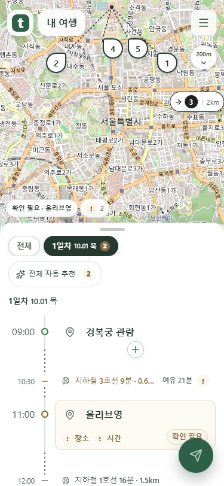
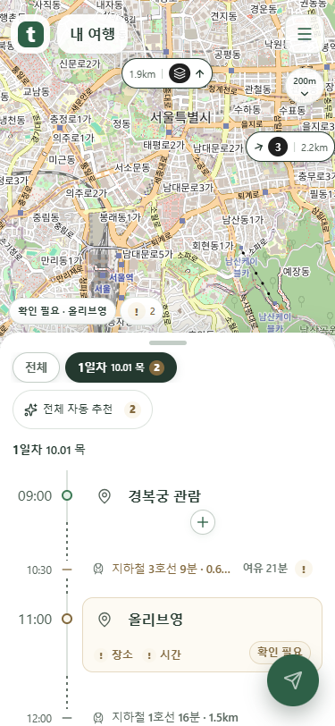
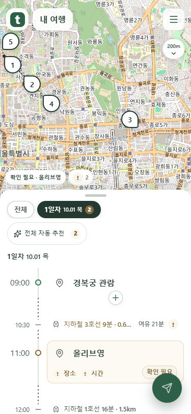
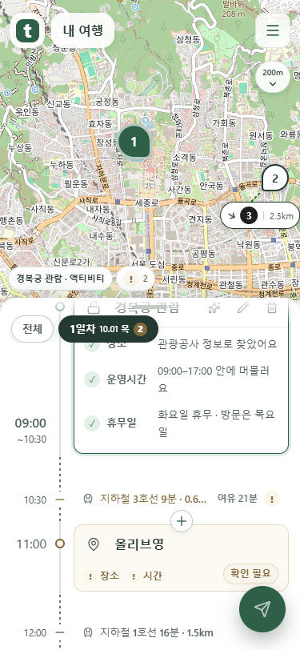

지도 안에서는 각각의 마커로 보입니다
실제 화면을 촬영했습니다. 메뉴 근처와 가장자리도 지도 안에 있으면 개별 마커를 유지하고, 겹침을 피해 옮긴 마커는 실제 위치와 점선으로 연결합니다.
메뉴 가까이에 있는 장소
같은 위치에 가까이 모인 장소도 지도 안에서는 번호를 따로 표시합니다. 메뉴를 피해 옮긴 마커의 점선이 실제 좌표를 가리킵니다.

화면 밖으로 나간 뒤
실제 지도 경계를 벗어났을 때만 거리 칩으로 바뀝니다. 번호와 여러 일정 아이콘의 바탕은 검정입니다.

지도 가장자리로 돌아온 뒤
다시 지도 안에 들어오면 각각의 마커가 복원됩니다. 화면 끝에서 잘리지 않도록 몸통을 옮깁니다.

손잡이 부근에서 서서히 사라지는 내용
목록을 위로 스크롤하면 상단 32px에서 내용이 서서히 흐려집니다. 손잡이와 날짜 버튼은 선명하게 유지됩니다.

mock 서버 화면 검증 결과이며 공개 배포 화면과 구분합니다.